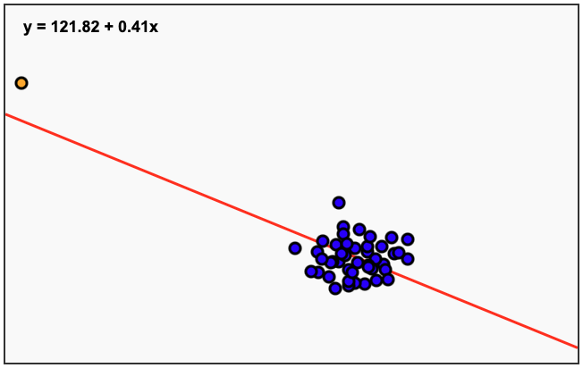
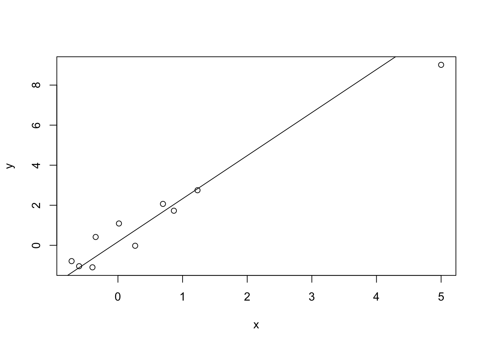
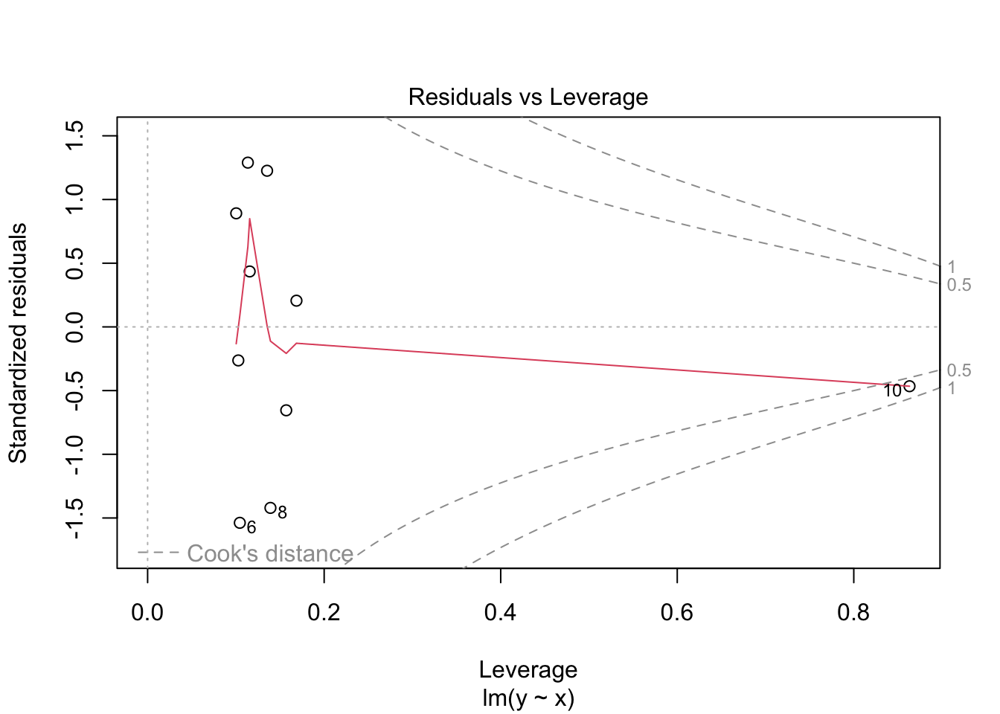
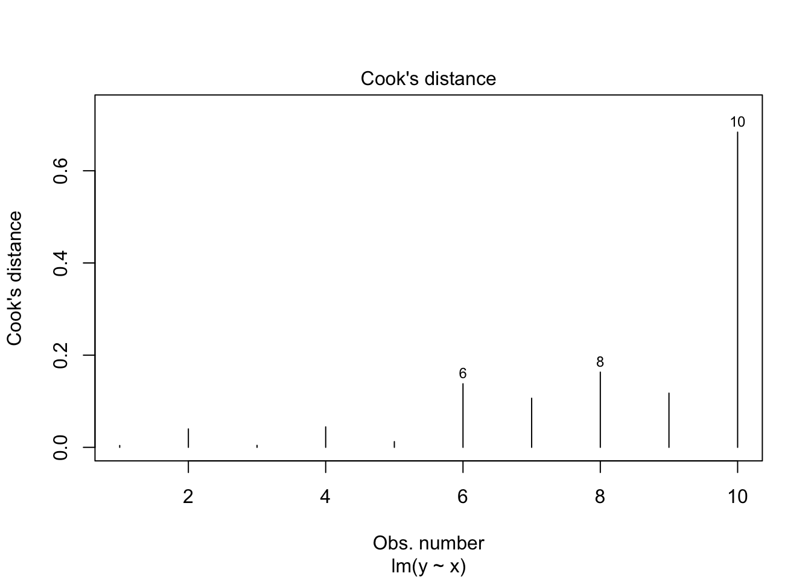
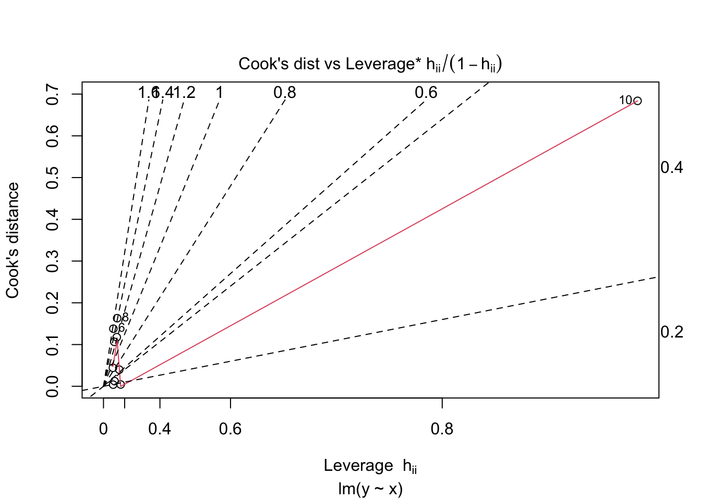
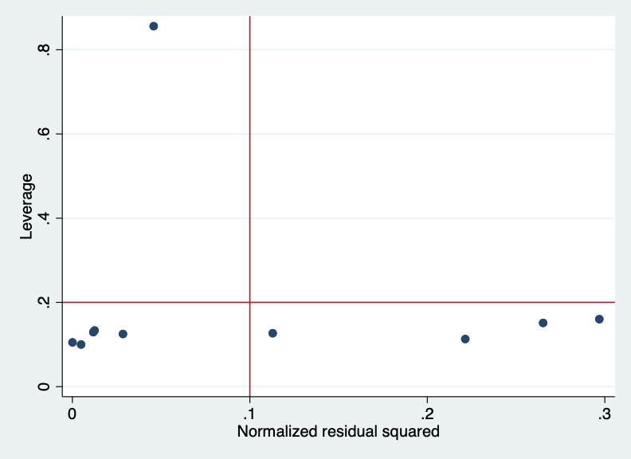

3Binary Covariates, Outliers, and Influential Observations
Learning objectives
By the end of this week you should be able to:
Formulate, carry out and interpret a simple linear regression with a binary independent variable
Check for outliers and influential observations using measures and diagnostic plots
Understand the key principals of methods to deal with outliers and influential observations
Learning activities
This week’s learning activities include:
Learning Activity
Learning objectives
Video 1
1
Notes&Readings
2, 3
Binary covariates
So far we have limited our analysis to continuous independent variables (e.g. age). This week we are going to explore the situation where the independent variable (the \(x\) variable) is binary.
Outliers and influential observations
An outlier is a point with a large residual. Sometimes an outlier can have a large impact on the estimates of the regression parameter. If you move some of the points in the scatter so they become outliers (far from other points), you can see this will affect the estimated regression line. However, not all outliers are the same. Try moving up and down one of the points at the beginning or the end of the X scale. The impact in the regression line is much stronger than if you do the same with a point in the mid range of X.
Interactive Regression Plot
Interactive Regression Plot
Conversely, a data point may not have a large residual but still have an important influence in the estimated regression line. Below, you can see that the data point in the left does not appear to have a large residual but it strongly affects the regression line. In the figure on the right, we can see that despite the main cloud of points not suggesting any trend, the extreme left point has a high influence in the final regression line.

There are several statistics to measure and explore outliers and influential points. We will discuss some here:
Leverage: measures of how far away each value of the independent variable is from the others. Data with high-leverage points, if any, are outliers with respect to the independent variables. The levarage (\(L\)) varies between 0 and 1.
Consider the simple example below with 10 simulated data points. The 10th value for X was chosen to be far from the others.
R code
Show the code
set.seed(1011)x<-rnorm(9) #random 9 valuesx[10]<-5#value far from the othersy<-rnorm(10,0.5+2*x,1) #generate y#plot the datalmodel<-lm(y~x) #fit the modelplot(x,y) #plot the dataabline(line(x,y)) # add the regression line

Stata code
Show the code
clearsetseed 1011setobs 10generate x = rnormal()replace x = 5 in 10generatey = rnormal(0.5+2*x,1)graphtwoway (lfity x) (scattery x)regressy x ## Number of observations (_N) was 0, now 10.## ## ## (1 real change made)## ## ## ## ## Source | SS df MS Number ofobs = 10## -------------+---------------------------------- F(1, 8) = 52.69## Model | 86.4227998 1 86.4227998 Prob > F = 0.0001## Residual | 13.1226538 8 1.64033173 R-squared = 0.8682## -------------+---------------------------------- Adj R-squared = 0.8517## Total | 99.5454536 9 11.060606 Root MSE = 1.2808## ## ------------------------------------------------------------------------------## y | Coefficient Std. err. t P>|t| [95% conf. interval]## -------------+----------------------------------------------------------------## x | 1.98254 .2731326 7.26 0.000 1.352695 2.612385## _cons | .516953 .477044 1.08 0.310 -.5831126 1.617018## ------------------------------------------------------------------------------
If we compute the leverage of each point, it is not surprising that x=5 has a high leverage.
clearsetseed 1011 *---------------------------- * Generate the data *----------------------------setobs 10generate id = _n// create an id for later merginggenerate x = rnormal()replace x = 5 in 10 * Note: In Stata the typical way to generate a normalvariable with mean mu and sd sigma is: * generatey = (0.5+2*x) + sigma*rnormal() * Here we mimic the provided code.generatey = (0.5+2*x) + rnormal() *---------------------------- * Estimate the full model and save coefficients *----------------------------regressy x *---------------------------- *Leverage *----------------------------predict lev, leverage *---------------------------- *Leverage computed manually *---------------------------- gen lev_manual = 1/10 + (x- .9228745)^2/( 1.563043^2 *9)list lev, lev_manual## Number of observations (_N) was 0, now 10.## ## ## ## (1 real change made)## ## ## ## Source | SS df MS Number ofobs = 10## -------------+---------------------------------- F(1, 8) = 52.69## Model | 86.4227998 1 86.4227998 Prob > F = 0.0001## Residual | 13.1226538 8 1.64033173 R-squared = 0.8682## -------------+---------------------------------- Adj R-squared = 0.8517## Total | 99.5454536 9 11.060606 Root MSE = 1.2808## ## ------------------------------------------------------------------------------## y | Coefficient Std. err. t P>|t| [95% conf. interval]## -------------+----------------------------------------------------------------## x | 1.98254 .2731326 7.26 0.000 1.352695 2.612385## _cons | .516953 .477044 1.08 0.310 -.5831126 1.617018## ------------------------------------------------------------------------------## ## ## ## option lev_manual not allowed## r(198);## ## r(198);
DFBETA: We can also compute how the coefficients change if each observation is removed from the data. This will produce a vector for \(\beta_0\) and \(\beta_1\) corresponding to \(n\) regressions fitted by deleting each observation at a time. The difference between the full data estimates and the estimates by removing each data point is called DFBETA. In the example of the small simulated dataset set above, the dfbeta can also be obtained from the influence() function in r.
#dfbeta(lmodel) #does the same thing#computing the DFBETA manually for the 10th observationcoef(lm(y~x)) -coef(lm(y[-10]~x[-10]))
(Intercept) x
0.003248704 -0.126864091
Stata code
Show the code
*I am not aware of a functionin Stata to compute *the unstandardised versionof DFBETA.*This script computes de unstandardise DFBETA "manually"clearsetseed 1011 *---------------------------- * Generate the data *----------------------------setobs 10generate id = _n// create an id for later merginggenerate x = rnormal()replace x = 5 in 10 * Note: In Stata the typical way to generate a normalvariable with mean mu and sd sigma is: * generatey = (0.5+2*x) + sigma*rnormal() * Here we mimic the provided code.generatey = (0.5+2*x) + rnormal() *---------------------------- * Estimate the full model and save coefficients *----------------------------regressy xscalar b0_full = _b[_cons]scalar b1_full = _b[x] *---------------------------- * Loop over each observation to compute DFBETA *---------------------------- * We will use a postfile to collect the results.tempname resultstempfiledfbetapostfile`results' id dfb0 dfb1 using"`dfbeta'", replaceforvalues i = 1/`=_N' {preservedropif id == `i'quietlyregressy xscalar dfb0 = _b[_cons] - b0_full // change in interceptscalar dfb1 = _b[x] - b1_full // change in slope for xpost`results' (`i') (dfb0) (dfb1)restore }postclose`results' *---------------------------- * Merge the DFBETA results back into the original dataset and list *----------------------------merge 1:1 id using"`dfbeta'", nogensort idlist dfb0 dfb1, sep(0)## option lev_manual not allowed## r(198);## ## ## ## ## Number of observations (_N) was 0, now 10.## ## ## ## (1 real change made)## ## ## ## Source | SS df MS Number ofobs = 10## -------------+---------------------------------- F(1, 8) = 52.69## Model | 86.4227998 1 86.4227998 Prob > F = 0.0001## Residual | 13.1226538 8 1.64033173 R-squared = 0.8682## -------------+---------------------------------- Adj R-squared = 0.8517## Total | 99.5454536 9 11.060606 Root MSE = 1.2808## ## ------------------------------------------------------------------------------## y | Coefficient Std. err. t P>|t| [95% conf. interval]## -------------+----------------------------------------------------------------## x | 1.98254 .2731326 7.26 0.000 1.352695 2.612385## _cons | .516953 .477044 1.08 0.310 -.5831126 1.617018## ------------------------------------------------------------------------------## ## ## ## ## ## (file /var/folders/xs/_nnmpq453c9b5lkpwdyr_2rc0000gp/T//S_89799.000001 not found)## ## (1 observation deleted)## (1 observation deleted)## (1 observation deleted)## (1 observation deleted)## (1 observation deleted)## (1 observation deleted)## (1 observation deleted)## (1 observation deleted)## (1 observation deleted)## (1 observation deleted)## ## ## ## Result Number ofobs## -----------------------------------------## Not matched 0## Matched 10 ## -----------------------------------------## ## ## ## +-----------------------+## | dfb0 dfb1 |## |-----------------------|## 1. | -.0285816 .0004244 |## 2. | -.0635384 .0181877 |## 3. | -.0604326 .016505 |## 4. | -.0916491 .023562 |## 5. | -.0027993 -.0004964 |## 6. | .3485724 -.1230088 |## 7. | .3177898 -.1061628 |## 8. | -.2352551 .0466999 |## 9. | -.0944892 -.0486345 |## 10. | -.3829395 .9983445 |## +-----------------------+
Note that the DFBETA above are computed in the original scale of the data. Thus, the magnitude of the difference is dependent on this scale. An alternative is to standardise the DFBETA using the standard errors. This will give as deviance from the original estimate in standard errors. A common cut-off for a very strong influence in the results is the value \(2\).
Show the code
#computes the standardised dfbeta. #note that there is also a #dfbeta() function that computes the non-stantandardised dfbetadfbetas(lmodel)
clearsetseed 1011 *---------------------------- * Generate the data *----------------------------setobs 10generate id = _n// create an id for later merginggenerate x = rnormal()replace x = 5 in 10 * Note: In Stata the typical way to generate a normalvariable with mean mu and sd sigma is: * generatey = (0.5+2*x) + sigma*rnormal() * Here we mimic the provided code.generatey = (0.5+2*x) + rnormal() *---------------------------- * Estimate the full model *---------------------------- regressy x *---------------------------- * Standardised DFBETA *---------------------------- dfbetalist## option lev_manual not allowed## r(198);## ## ## ## ## Number of observations (_N) was 0, now 10.## ## ## ## (1 real change made)## ## ## ## Source | SS df MS Number ofobs = 10## -------------+---------------------------------- F(1, 8) = 52.69## Model | 86.4227998 1 86.4227998 Prob > F = 0.0001## Residual | 13.1226538 8 1.64033173 R-squared = 0.8682## -------------+---------------------------------- Adj R-squared = 0.8517## Total | 99.5454536 9 11.060606 Root MSE = 1.2808## ## ------------------------------------------------------------------------------## y | Coefficient Std. err. t P>|t| [95% conf. interval]## -------------+----------------------------------------------------------------## x | 1.98254 .2731326 7.26 0.000 1.352695 2.612385## _cons | .516953 .477044 1.08 0.310 -.5831126 1.617018## ------------------------------------------------------------------------------## ## ## Generating DFBETA variable ...## ## _dfbeta_1: DFBETA x## ## ## +----------------------------------------+## | id x y _dfbeta_1 |## |----------------------------------------|## 1. | 1 .8897727 2.534658 -.0014574 |## 2. | 2 .0675149 1.056028 -.0627431 |## 3. | 3 .1199856 1.148383 -.0569127 |## 4. | 4 .1817483 1.488953 -.0820419 |## 5. | 5 1.257954 3.040046 .0017001 |## |----------------------------------------|## 6. | 6 -.2278177 -1.908616 .5239667 |## 7. | 7 -.1390651 -1.624345 .4384975 |## 8. | 8 .3885022 2.991632 -.1846272 |## 9. | 9 1.69015 5.084781 .1784969 |## 10. | 10 5 9.654363 -4.140455 |## +----------------------------------------+
In the example above, the 10th observation seems to haves reasonable impact in the estimates.
Cook’s distance - This is another measure of influence that combines the leverage of the data point and its residual. It summarizes how much all the values in the regression model change when each observation is removed.
clearsetseed 1011 *---------------------------- * Generate the data *----------------------------setobs 10generate id = _n// create an id for later merginggenerate x = rnormal()replace x = 5 in 10 * Note: In Stata the typical way to generate a normalvariable with mean mu and sd sigma is: * generatey = (0.5+2*x) + sigma*rnormal() * Here we mimic the provided code.generatey = (0.5+2*x) + rnormal() *---------------------------- * Estimate the full model *---------------------------- regressy x *---------------------------- * Cook distance *---------------------------- predict cook_d, cooklist## option lev_manual not allowed## r(198);## ## ## ## ## Number of observations (_N) was 0, now 10.## ## ## ## (1 real change made)## ## ## ## Source | SS df MS Number ofobs = 10## -------------+---------------------------------- F(1, 8) = 52.69## Model | 86.4227998 1 86.4227998 Prob > F = 0.0001## Residual | 13.1226538 8 1.64033173 R-squared = 0.8682## -------------+---------------------------------- Adj R-squared = 0.8517## Total | 99.5454536 9 11.060606 Root MSE = 1.2808## ## ------------------------------------------------------------------------------## y | Coefficient Std. err. t P>|t| [95% conf. interval]## -------------+----------------------------------------------------------------## x | 1.98254 .2731326 7.26 0.000 1.352695 2.612385## _cons | .516953 .477044 1.08 0.310 -.5831126 1.617018## ------------------------------------------------------------------------------## ## ## ## +---------------------------------------+## | id x y cook_d |## |---------------------------------------|## 1. | 1 .8897727 2.534658 .0024235 |## 2. | 2 .0675149 1.056028 .00888 |## 3. | 3 .1199856 1.148383 .0080535 |## 4. | 4 .1817483 1.488953 .0186161 |## 5. | 5 1.257954 3.040046 .000034 |## |---------------------------------------|## 6. | 6 -.2278177 -1.908616 .2698209 |## 7. | 7 -.1390651 -1.624345 .2228213 |## 8. | 8 .3885022 2.991632 .1271682 |## 9. | 9 1.69015 5.084781 .0750629 |## 10. | 10 5 9.654363 7.563721 |## +---------------------------------------+
With the example using the simulated sample with 10 observations, the rule of thumb would be \(4/10\). Again, the 10th observation is above this threshold and would requires some consideration.
Plots: The above mesaures are commonly represented in a graphical way. There are many variations of these plots. Below are some examples of these plots but many other plots are available in different packages.
R code
Show the code
#leverage vs residuals#A data point with high leverage and high residual may be problematicplot(lmodel,5)

Show the code
#Cook's distanceplot(lmodel,4)

Show the code
#Leverage vs Cook's distance plot(lmodel,6)

Stata code
Show the code
clearsetseed 1011 *---------------------------- * Generate the data *----------------------------setobs 10generate id = _n// create an id for later merginggenerate x = rnormal()replace x = 5 in 10 * Note: In Stata the typical way to generate a normalvariable with mean mu and sd sigma is: * generatey = (0.5+2*x) + sigma*rnormal() * Here we mimic the provided code.generatey = (0.5+2*x) + rnormal() *---------------------------- * Estimate the full model *---------------------------- regressy x *---------------------------- * Leverage's plot *---------------------------- lvr2plot## option lev_manual not allowed## r(198);## ## ## ## ## Number of observations (_N) was 0, now 10.## ## ## ## (1 real change made)## ## ## ## Source | SS df MS Number ofobs = 10## -------------+---------------------------------- F(1, 8) = 52.69## Model | 86.4227998 1 86.4227998 Prob > F = 0.0001## Residual | 13.1226538 8 1.64033173 R-squared = 0.8682## -------------+---------------------------------- Adj R-squared = 0.8517## Total | 99.5454536 9 11.060606 Root MSE = 1.2808## ## ------------------------------------------------------------------------------## y | Coefficient Std. err. t P>|t| [95% conf. interval]## -------------+----------------------------------------------------------------## x | 1.98254 .2731326 7.26 0.000 1.352695 2.612385## _cons | .516953 .477044 1.08 0.310 -.5831126 1.617018## ------------------------------------------------------------------------------

Book Chapter 4. Outlying, High Leverage, and Influential Poitns 4.7.4 (pages 124-128).
This reading supplements the notes above with emphasis in the DFBETA plots. Note that this subchapter appears in the book after the extension of simple linear regression to the use of multiple independent variables (covariates) in the regression model, which we did not yet cover. However, there are only a few references to the multiple linear regression case.
Exercises:
The dataset lowbwt.csv was part of a study aiming to identify risk factors associated with giving birth to a low birth weight baby (weighing less than 2500 grams).
1 - Fit a linear model for the variable bwt (birth weight) using the covariate age (mother’s age), evaluate the assumptions and interpret the results.
2 - Evaluate potential outliers and influential observations. How would the results change if you excluded this/these observation(s)?
Summary
This weeks key concepts are:
The key concepts around binary variables will be added here after you have had a chance to finish your independent investigation.
Outliers are observations with a very large absolute residual value. That is, we normally refer to outliers as observations with extreme values in the outcome variable \(Y\). Outliers in the covariate \(x\) are observations with high leverage. The precise formula for leverage is less important than understanding how high leverage observations can impact your regression.
A residual versus leverage plot is a very useful diagnostic to see which observations may be highly influential
Observations that are outliers (in the outcome) and that have low leverage, may influence the intercept of your regression model
Observations that are not outliers, but have high leverage might artificially inflate the precision of your regression model
Observations that are outliers AND have high leverage may influence the intercept and slope of your regression model
When potentially highly influential observations are detected, a sensitivity analysis where the results are compared with and without those observations is a useful tool for measuring influence.